An AI-Generated Illustration

Sleep health is a cornerstone of overall wellbeing. The hours we rest — and how well we rest — ripple into our mood, focus, metabolism, and long-term health. Yet sleep is shaped by dozens of everyday choices we rarely connect to it.
Our project digs into a lifestyle & sleep-patterns dataset to surface those connections: which factors correlate most with sleep quality, which combinations matter most, and how a person might tune their daily routine for better rest.
Physical activity and daily step counts as predictors of sleep quality.
How reported stress levels track with shorter, more fragmented sleep.
Timing, duration, and consistency — the quiet architecture of rest.
Age and individual body factors that shift what "good sleep" looks like.
"Understanding the relationships between lifestyle factors and sleep can give us real, usable insight into improving our own health."
Because sleep-quality ratings in the dataset are self-reported, scales may differ from person to person. Where we can adjust for that inconsistency we will — and where we can't, we'll say so plainly. Good data storytelling means being transparent about its limits.
Return to the home page